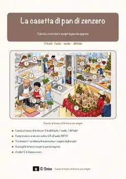
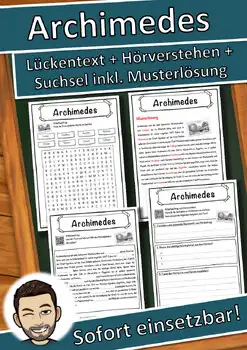
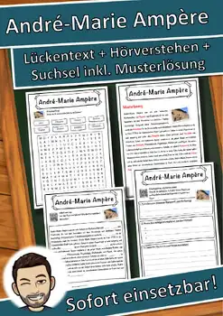
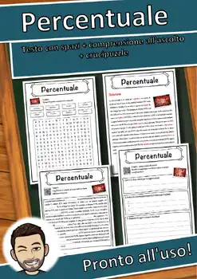

Italian Gingerbread Reading Comprehension | Caccia al tesoro in italiano
An Italian reading scavenger hunt with a math twist for 7th and 8th grade! In “La casetta di pan di zenzero,” the class 7b builds gingerbread houses in the school kitchen (“Cucina della scuola”) for the Christmas market – and your students join them. Emir, 13, wants to start cutting right away. Sofia, 12, protests and gets out her ruler. Their math teacher, maestro Brandi, presents the project. Briciola, a tiny talking gingerbread man, crumbles whenever someone measures carelessly. Students read short passages in Italian, follow the clues from station to station, and solve tasks along the way. Dead ends let students check their own work – just like an escape room on paper.
WHAT’S INCLUDED (23 pages):
- Reading scavenger hunt with 8 stations: “Cucina della scuola,” “Postazione modelli,” “Teglia da forno,” “Tagliere,” “Angolo della glassa,” “Frigorifero,” “Tavolo dei decori,” and “Bancarella”
- 4 dead ends (“Lavandino,” “Pattumiera,” “Davanzale,” “Ripostiglio”) that tell students when they have taken a wrong turn
- 3 built-in task types: matching, quiz, and riddle
- A math word problem whose answer leads to a picture gate – students must solve it correctly to move on
- Teacher guide and answer key
MATH CONTENT: the rectangular prism (“parallelepipedo”), its net (“sviluppo”), and surface area (“superficie”), plus plane and solid figures, all set in a real gingerbread-house project (connects to CCSS 6.G.A.4, 7.G.B.6, and 7.G.A.3).
SKILLS: interpretive reading in Italian, close reading of informational text (RI.7.1, RI.7.4), problem solving and modeling (MP1, MP4), partner work (SL.7.1), and ACTFL Interpretive Reading (Heritage/World Language).
PERFECT FOR: Italian classes in grades 7-8, heritage language learners, cross-curricular math and language projects, the December holiday season, early finishers, and substitute plans.
No prep beyond printing. Some illustrations were created with AI tools and reviewed by the author.
⭐ Did this resource work well in your classroom? Please leave a quick review on TPT – you earn TPT credits for future purchases, and it helps me a lot! Click "Follow" on my store page to be the first to hear about new freebies.
U.S. STANDARDS (alignment):
- NGSS MS-ESS1-1; NGSS MS-ESS1-2; NGSS MS-ESS1-3; NGSS MS-PS1-1; NGSS MS-PS1-2; NGSS MS-PS1-4; C3 D2.Eco.1.6-8; C3 D2.Eco.2.6-8; ACTFL World-Readiness Standards: Interpretive Communication; ACTFL Cultures (Relating Cultural Practices/Products to Perspectives); ACTFL Connections (Acquiring In
Similar resources

Archimedes – Arbeitsblatt Lückentext, Hörverstehen & Suchsel | Deutsch / German

André-Marie Ampère – Arbeitsblatt Lückentext & Hörverstehen (Deutsch / German)

Ada Lovelace – Arbeitsblatt Lückentext & Hörverstehen (Deutsch / German)

Percentuale – Italian Reading Comprehension Worksheet (Scheda didattica)
Numero primo – Italian Reading Comprehension Worksheet (Scheda didattica)

Math Mosaic FREE Sampler | Multiplication Color Puzzle | Grades 2-3

Advent House Town: Paper Advent Calendar Craft & Activities, Grades 3-4